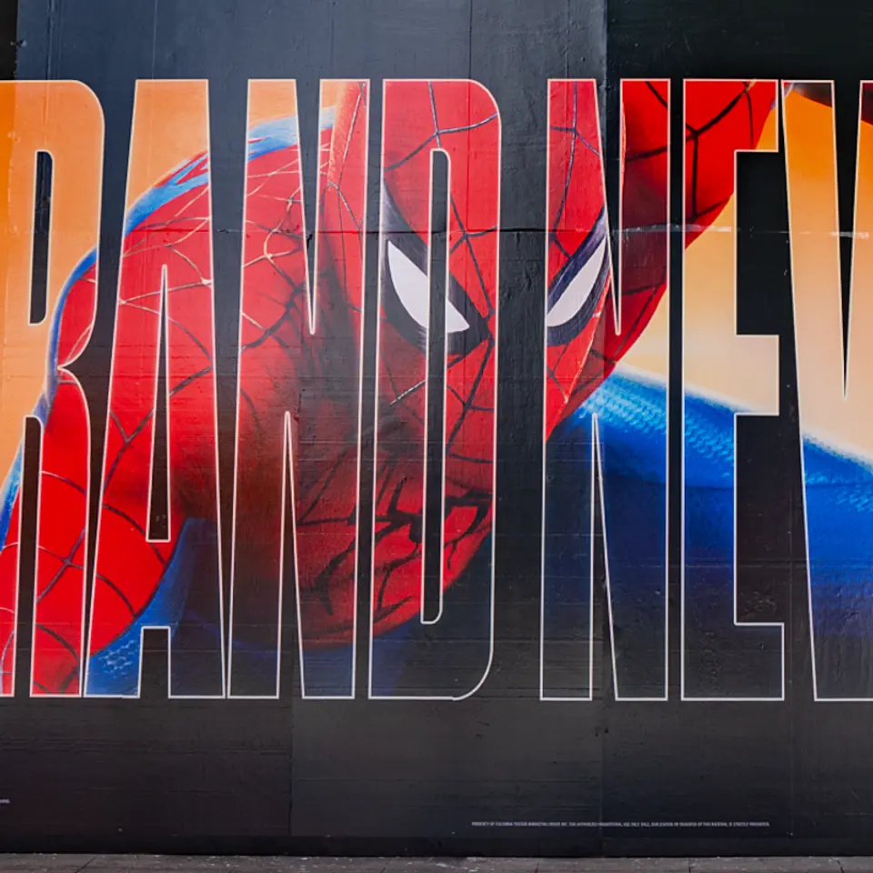
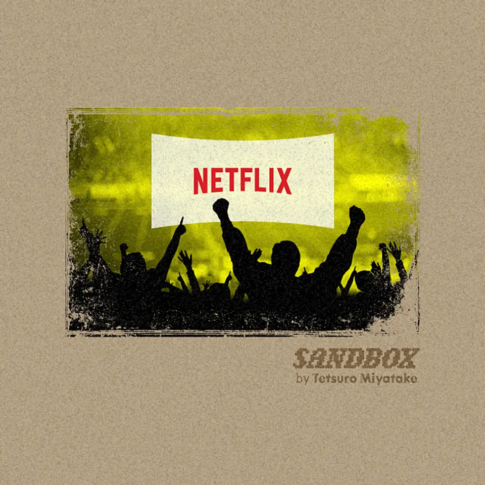
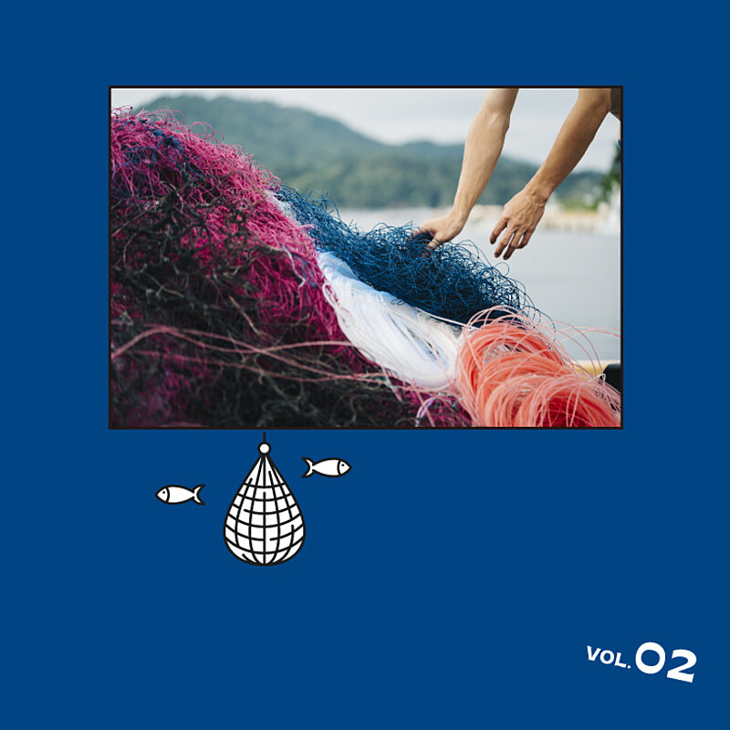
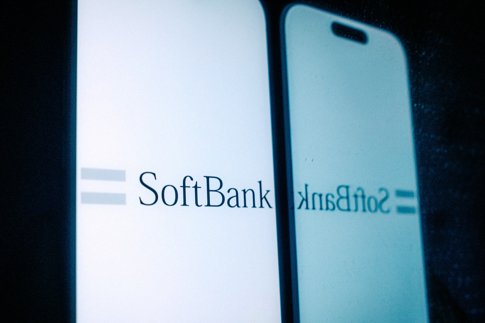

【ソニー最高益】エンタメが「稼ぎ続ける」仕組みの正体
発行日時：2026-11-12 05:30:03 JST
NewsPicks原文を読む

あなたに関係ありそうな理由
ゲーム・音楽・映画の各事業が、作品の発売後もどう収益を積み重ねるかを理解できます。ヒットの規模だけでなく、会員や配信、権利を通じて価値を長く回収する方法が経営の参考になります。
概要
NewsPicks編集部は、ソニーグループの2027年3月期第2四半期決算を起点に、エンターテインメントが利益を生み続ける仕組みを分析する。連結営業利益は前年同期比45％増の6223億円。ゲーム、音楽、映画の3事業は、2022年3月期から2026年3月期までの利益を単純合算すると全体の約3分の2を占めたという。記事は、販売台数の拡大だけでなく、作品や会員との接点を長く保つ仕組みに注目する。
ゲームでは営業利益が前年同期比83％増の2201億円となった。前年の一時損失を除いても約29％増と記事は説明する。一方、PS5の販売台数は前年同期の400万台から260万台へ減少した。そこで注目されるのが、PlayStationの月間アクティブユーザー1億2700万人とネットワーク事業だ。第2四半期のネットワークサービス売上は、比較可能な期間で1004億円から2183億円へ約2.2倍に増えている。
音楽事業も、楽曲が配信された後に再生され続けることで収益を積み上げる。記事によると、音楽ストリーミング売上は2022年3月期から2026年3月期までに1370億円から3166億円へ約2.3倍となった。Spotifyの上位200曲では、発売から18カ月を超えた曲が再生の過半を占めるという。新曲の初動だけに依存せず、過去の楽曲カタログを持ち、再生や権利収入を積み重ねることが事業の安定につながる。
映画事業では、記事が比較する第2四半期の営業利益が139億円から926億円へ約7倍に拡大した。劇場公開の後に配信へ移るまでの期間を調整し、Netflixとの契約やCrunchyrollの有料会員2100万人超など、複数の窓口で作品の価値を回収する。映画は劇場で終わりではなく、配信、定額サービス、関連権利へ広がる。作品ごとに観客との接点を変えながら、収益機会を重ねる構造が示されている。
記事の中心は、単発の大ヒットより、ゲーム機の利用者、楽曲カタログ、映画の配信先を積み上げる事業構造にある。機器販売が伸び悩む局面でも、既存利用者がサービスを使い続ければ収益源を保てる。ただし、作品の人気や会員数が将来も同じ水準で続くとは限らない。表示コメントでは、長期収益や事業間の相乗効果に加え、ヒット依存や資本配分も論点になった。会社の数値と読者の評価を分けて、継続収益の条件を読む記事だ。
仕事や会話で使える一言
「一度のヒットを、次の作品までどう収益につなぐかも設計したいですね。」
【真相】Netflixが「視聴時間」を奪う新戦略
発行日時：2026-11-12 05:30:02 JST
NewsPicks原文を読む

あなたに関係ありそうな理由
配信サービスが新作の本数だけで競う段階から、ライブや広告、テレビ画面での視聴時間を取り合う段階へ進む背景を学べます。
概要
NewsPicks編集部は、Netflixが動画配信の成長鈍化に直面する中で、ライブスポーツやイベントへ投資する理由を取材する。記事によると、同社は10月に全社員の約6％を削減し、売上の伸びも以前より鈍化している。時価総額も過去1年で約4割下落した。会員を増やし続けるだけでは成長を保ちにくくなり、契約者に長く見てもらい、新しい視聴者を呼び込む方法が問われている。
取材対象の宮武徹郎氏は、NetflixのF1ドキュメンタリーがレースへの関心を高めても、視聴者をレース中継へ結びつけられなかった機会損失を指摘する。ドキュメンタリーが話題を作っても、視聴者が実際のイベントを同じサービスで見られなければ、関心を継続視聴へ変えにくい。ライブはその場で起きる出来事を共有し、視聴者が同時に集まるため、見逃し配信や過去作品とは異なる価値を持つ。
NetflixはNFLのシーズン放映権を丸ごと買うのではなく、クリスマス当日の2試合を配信する方法を選んだ。記事は、ビヨンセのハーフタイムショーなどを組み合わせ、年間契約より限定された費用で大きな「瞬間」を作る戦略として説明する。スポーツ中継だけでなく、音楽イベントや人気番組のライブも、決まった時刻に視聴者を呼ぶ仕掛けとなる。高額な権利を継続して抱える場合とは、投資の規模と期間が異なる。
Nielsenの調査では、2024年のクリスマスに配信したNFLの2試合を、米国内で重複を除き約6500万人が視聴した。ライブの一大イベントは、その日の視聴時間を増やすだけでなく、広告プランや新規契約、ほかの作品への回遊にもつながりうる。Netflixにとっては、F1などの既存コンテンツが呼び込んだ関心を、スポーツやライブ配信へ接続できるかが焦点だ。実際の顧客獲得や継続率への効果は今後見る必要がある。
記事は、動画配信企業同士の競争に加えて、YouTubeなどがテレビ画面で占める時間も背景に置く。Netflixは自社の配信基盤を使いながら、作品を他社へ販売する選択も取り、すべてを独占する方針に固定していない。ライブは視聴時間を取り戻す手段だが、放映権料に見合う収益が得られるかは別の問題である。表示コメントでも、スポーツの共有感、広告、顧客獲得費用、権利コストの採算が議論された。本文の戦略説明と読者の評価を区別して読む必要がある。
仕事や会話で使える一言
「作品を増やすだけでなく、視聴者が集まる瞬間を作れるかが鍵ですね。」
【Luup社長】今のキックボードには、限界がある
発行日時：2026-11-12 05:30:00 JST
NewsPicks原文を読む
あなたに関係ありそうな理由
新しい移動サービスが制度、交通安全、歩行者との共存をどう扱うかを知る材料です。短距離移動と高齢者向け車両の展開は、都市の交通や地域サービスを考える際にも参考になります。
概要
NewsPicks編集部は、電動キックボードをめぐる海外の逆風と、日本での普及を進めるLuupの岡井大輝社長への取材から、現在の車両が抱える限界を探る。事故や危険運転への懸念が出る中、社長は利用者の安全性を高めることと、歩行者を含む社会から安心して受け入れられることの両方が必要だと語る。サービスの利便性だけでは、道路上の交通手段として長く使われる条件を満たせない。
記事では、Luupが業界団体を作り、段階を踏んだ実証実験や政府へのデータ提供を通じて制度形成に関わってきた経緯を紹介する。岡井氏は、普及した違法車両や海外で起きた問題も、国の制度検討に影響したと見ている。制度づくりには会社側の提案だけでなく、実際の利用状況や事故、地域の受け止め方が関係する。サービス提供者が規制の外側から要望するだけではなく、行政とデータを共有し、運用ルールを詰めてきたという説明だ。
社長が「今のキックボードには限界がある」とする理由の一つは、利用者や用途を広げにくい車両の形にある。Luupはアイシンと、三輪の着座式小型車両「Unimo」を共同開発している。キックボードに乗りにくい人や、高齢者を含む幅広い層を想定した製品だ。記事は、移動手段を一つの乗り物に固定せず、利用者の身体状況や目的に合わせて選択肢を増やそうとする計画として紹介する。
岡井氏によると、Luupで最も多い移動時間は7〜8分だという。駅から目的地まで、または目的地から次の交通機関までの短い移動は、鉄道やバスだけでは埋めにくい。電動モビリティがその隙間を担える可能性はあるが、利用者を増やすほど、歩道や交差点での安全、駐車場所、利用者マナーの管理が問われる。Unimoの開発でも、車両の性能と価格、普及の見込みを確かめる必要がある。
この記事が描くのは、車両の普及を先に進めるより、制度、技術、地域の納得を並行して整える事業の進め方だ。表示コメントでは、事故や歩行者への影響、利用者マナー、自治体との合意形成、着座式車両の可能性が論点になった。これらは読者の評価で、社長の説明そのものとは区別される。今後は、実証やデータ提供が事故の減少や安心感に結びつくか、Unimoが誰のどんな移動を助けるかを見たい。
仕事や会話で使える一言
「便利さを広げるには、利用者以外の安心も同時に作らないといけませんね。」
気仙沼に魅せられた大学生が「廃漁網」に着目して起業するまで
発行日時：2026-11-12 11:00:00 JST
NewsPicks原文を読む

あなたに関係ありそうな理由
地域の廃材を素材に変える事業の立ち上げと、地元企業・大手メーカーを結ぶ方法を具体的に学べます。
概要
NewsPicks+ dは、気仙沼で廃漁具の再生素材「amuca」を手がけるamu代表の加藤広大氏を取材する。加藤氏は大学1年のとき、唐桑半島のワークキャンプをきっかけに気仙沼へ通い始め、毎年100日以上を地域で過ごすようになった。東京ではABEMAの番組プロデューサーを務めた後、2019年に気仙沼へ移住し、地域おこし協力隊として現地の課題や事業の種を探した。
起業にあたって加藤氏が向き合ったのは、地域資源を商品にすることそのものではなく、漁業の現場で長く使われた漁具が廃棄される問題だった。漁師が積み上げてきた仕事や海との関係に敬意を持ち、海産物を加工して売るのではなく、使い終わった網やロープを再資源化する方針を選ぶ。漁師から廃漁具を受け取り、由来や使われ方を伝えることで、素材の背景にも価値を持たせようとしている。
事業を形にするには、回収した漁具を分別し、素材を判別して、加工に使える状態へ整える技術が必要だ。記事は、漁網に使われるナイロン6に再生可能性があると分かり、化学メーカーのUBEと技術協力を始めた経緯を紹介する。さらに、2024年4月にはUBEがamuの第三者割当増資を引き受けた。地域での回収から素材化までを、スタートアップ単独で抱えず、既存メーカーの技術と資金を組み合わせて進めている。
amuの役割は、網を集めるだけではない。漁師や地域の関係者と回収方法を作り、素材の選別と洗浄、品質の分析、加工先や商品企業との連携をまとめる。再生材を使う企業に対しては、素材の性能だけでなく、どの地域でどのように使われた漁具なのかも伝える。素材ブランド「amuca」は、廃漁具を資源として流通させる仕組みと、気仙沼の漁業の物語を一緒に届ける試みとして記事に登場する。
この事例が示す課題は、廃材を製品化することだけでなく、安定して集め、品質をそろえ、買い手へ届ける流れを続けられるかという点にある。現地で信頼を築く時間、素材ごとの処理、企業側の需要が欠かせない。表示コメントは記事の取材意図を補足する投稿者コメントで、読者コメントは表示されていない。地域の課題を新しい産業に結びつける過程を、起業家の移住から技術協力、出資まで具体的にたどる記事だ。
仕事や会話で使える一言
「地域の課題を、外から売り込む前に現場の人と掘り下げたいですね。」
ソフトバンクGのOpenAI巨額投資、米投資会社アポロとの関係が支え
発行日時：2026-11-12 20:00:00 JST
NewsPicks原文を読む

あなたに関係ありそうな理由
AIへの大型投資がどの資金調達と担保に支えられ、貸し手や投資会社にどんな集中リスクを生むかを具体的な数字で把握できます。
概要
Bloombergは、ソフトバンクグループ（SBG）のOpenAI向け巨額投資を、米投資会社アポロとの融資関係から報じる。2021年以降、アポロは複数の取引を通じてSBGへ150億ドル超の融資を提供、または仲介してきた。記事は、この資金の流れが孫正義氏のOpenAIへの約650億ドル投資を支える一端になっていると説明する。AI企業への投資額だけでなく、資金を調達する仕組みと関係者の負担が焦点だ。
記事によると、アポロ傘下の保険会社アテネは、9月末時点でSBGに関連する少なくとも48億ドルの債権を保有していた。これは単一の借り手への投資集中を制限する社内基準に近い規模だという。アポロの貸し付けはSBGだけに限られないが、保険会社の資産を運用する投資会社が、巨大テック企業の投資計画と結びついている点に注意を向ける。貸し手側にも、特定企業へ資金が偏るリスクがある。
SBG自身の財務状況も記事の背景にある。7〜9月期に同社は1兆1153億円の赤字を計上し、株価は6月以降50％を超えて下落した。記事は、投資先の評価変動が大きい中で、追加の資金調達と投資をどう続けるかを問う。OpenAIはビジョン・ファンド2の公正価値の約4分の3を占めるとされ、投資ポートフォリオの中での集中も高い。大きな成長期待と、資産価値が一社へ寄る危うさが同時にある。
アポロが組成する純資産価値（NAV）ローンは、保有資産を担保に資金を貸す仕組みだ。記事によると、アポロのNAVローン残高は92億ドルで、担保評価に対する融資比率は20％未満とされる。担保価値に余裕があれば損失への耐性は高まるが、担保となる投資資産の価値が下がれば、貸し手と借り手の双方に影響が及ぶ。AI向け投資の拡大を、プライベートクレジットがどこまで支えられるかという金融面の論点も浮かぶ。
この記事は匿名の関係者による説明を多く含み、投資額や融資関係のすべてを公表済みの会社資料と同じ確度で扱うことはできない。読者コメントも表示されず、本文の報道内容を中心に読む必要がある。今後の注目点は、OpenAIの企業価値や資金需要、SBGの投資回収、アテネを含む貸し手の集中上限、担保評価の変化だ。AI投資を追う際、発表額だけでなく、資金の供給者とリスクの置き場所まで見るための報道である。
仕事や会話で使える一言
「投資額だけでなく、その資金を誰がどの担保で支えているのか確認したいですね。」